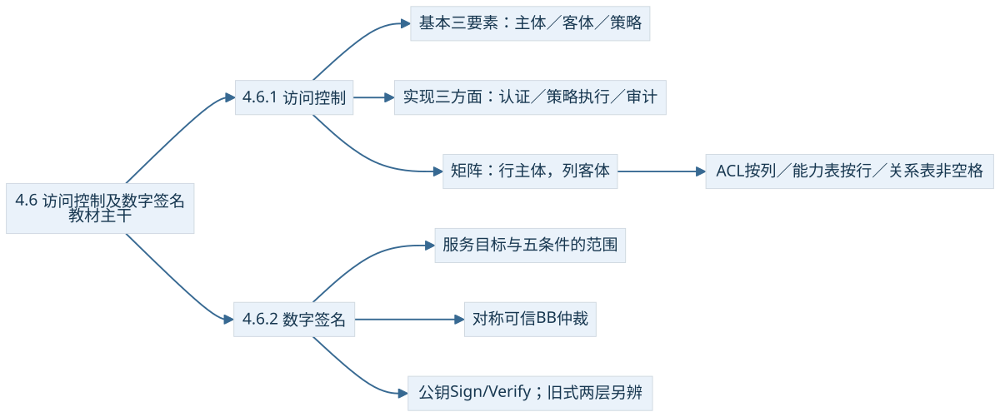
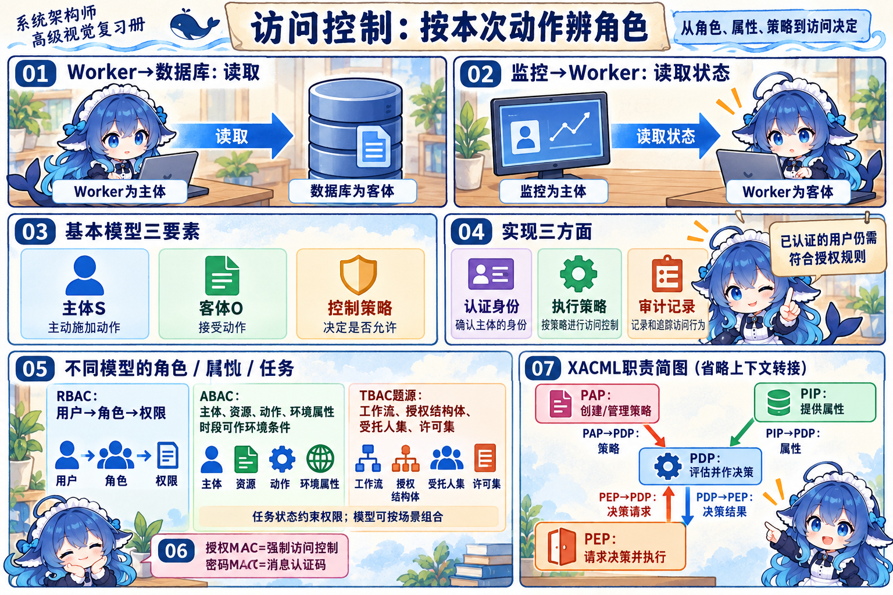
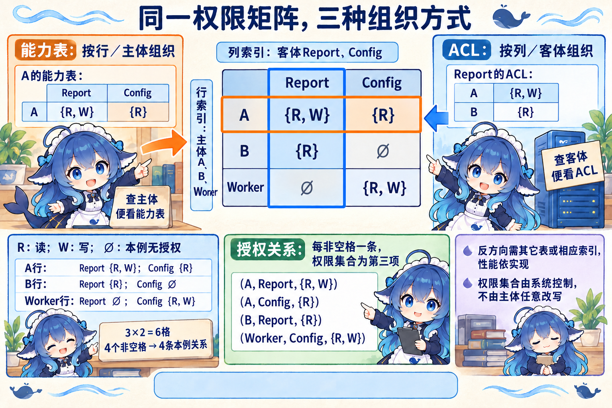
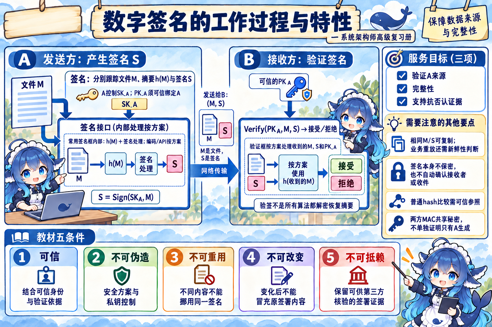
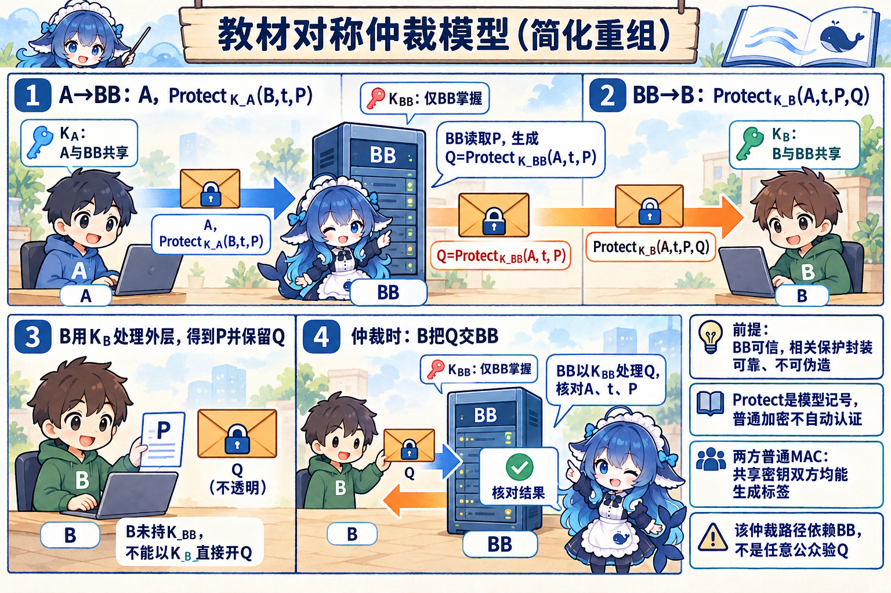
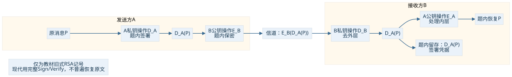
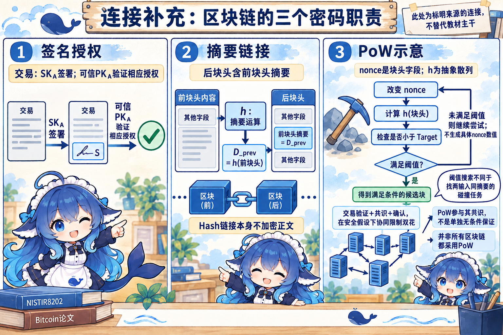

4.6.1 访问控制：动作中的三种角色
报表进程 Worker 向数据库读取数据，这次动作的主体是 Worker，数据库资源是客体；规则规定它能读哪些表、能否写入。监控进程随后查询 Worker 的运行状态，Worker 又成为被访问的客体。主体主动发起动作，客体接受动作，角色随具体交互确定，不按“这是人还是机器”永久固定。
教材基本模型有三个要素：主体 S、客体 O、控制策略。策略描述允许的操作集合和约束条件。用户、用户组、终端、应用服务、进程均可能是主体；文件、记录、硬件资源或被访问的服务均可能是客体。R 表示读，W 表示写，Own 表示管理权限；这里把管理写为 Own，避免和客体 O 混淆。
运行时还要完成三方面工作：认证确定实体身份，执行控制策略决定访问是否允许，审计记录操作和授权变更。基本模型“三要素”和实现“三方面”是不同分类。登录成功的工作人员可能仍无权修改报表；审计日志提供追查线索，不代替当场授权判断。管理员有较大的授权能力，也应记录其变更；教材关于滥用权限的提醒不等于所有管理员行为只能靠日志约束。


连接：角色、属性、任务与策略执行
在 SOA 的跨系统服务中，RBAC 用“用户—角色—权限”组织岗位授权；ABAC 可把主体、资源、动作和环境属性结合起来，访问时段是环境条件的一个例子。TBAC 的题源四元组为工作流、授权结构体、受托人集、许可集，重点是权限与任务状态、执行资格和许可集合的联系，不只是一个平铺任务列表。角色模型也可配合动态约束，几种模型可以组合。
XACML 连接“如何表达与评估策略”和“在哪里执行”。PAP 创建／管理策略，PIP 提供属性，PDP 评估并作决策，PEP 在入口请求决策并执行；上下文处理器负责格式与属性协调。本图省略处理器的内部转接，只保留四点职责。SOA 原案例第三问的完整备选列表缺失，其中策略来源圆柱究竟叫 PAP 还是独立策略库仍有选项口径边界，本册通过职责学习，不补造原选项或个人作答。
架构质量属性题还要按控制目的识别术语：限制访问按授权规则限制资源使用，是该题的安全性策略；模块化语境的信息隐藏封装易变实现细节、缩小修改传播，主要对应可修改性。“隐藏”二字不能直接代替访问授权或保密加密。同一教程的安全导论也出现信息隐藏这个名称，因此本辨析限定在题干的软件架构策略语境，不作全领域用途排除。
MAC 在此类访问控制话题里可指强制访问控制，在密码话题里则指消息认证码。强制规则、安全标签与消息上的认证标签属于不同层次。
同一矩阵的三种保存方法
下面是教学示例。矩阵行是主体、列是客体，单元格是权限集合；∅ 表示本例没有授权。并非只要数据库“有行有列”，就应该把整个稀疏访问矩阵原样建成宽表。
| 主体行＼客体列 | 报告 Report | 配置 Config |
|---|---|---|
| A | {R,W} | {R} |
| B | {R} | ∅ |
| Worker | ∅ | {R,W} |


| 表示 | 本例抽出的内容 | 直接方便的问题 | 反方向查询 |
|---|---|---|---|
| ACL 按列，挂在客体 | Report 的 ACL：A→{R,W}；B→{R} | 谁可以访问这份报告？ | 查 A 对所有资源的权限，要搜其它客体表或配合索引 |
| 能力表按行，面向主体 | A 的能力表：Report→{R,W}；Config→{R} | A 可访问哪些资源？ | 查谁有某资源的权限，要搜其它主体表或配合机制 |
| 授权关系表保存非空格 | (A,Report,{R,W})；(A,Config,{R})；(B,Report,{R})；(Worker,Config,{R,W}) | 按主体或客体组织、排序／索引查询 | 效率取决于具体存储与查询实现 |
本例 3×2=6 个格，4 个非空格，按“每个非空格一条、第三项为权限集合”的教材粒度有 4 条授权关系。若数据库把每个 R/W 操作单独存一行，行数会变；先说明粒度再计数。列保存、行保存和关系存储的差异，不等于查询永远 O(1)、所有撤权立即生效或某技术在所有场景都最快。缓存、继承和实际实现都会影响行为。
能力表的权限内容必须受系统控制，不能由主体任意改出新权限。一个名叫 JWT 或 Ticket 的凭据是否承担能力授权，要看其权限语义、可信性和验证方式，不能仅凭名字画等号。教材对某种机制当年商业使用状况的叙述作为历史背景保留，不作今天的普遍选型判断。
改变一个条件：现在授权 B 读 Config
Config 的 ACL 新增 B→{R}；B 的行变成 Report→{R}、Config→{R}；授权关系表新增 (B,Config,{R})，非空格行数从 4 变 5。Report 的 ACL 内容不变。这里改变的是授权关系，没有把矩阵的主体行／客体列交换。
4.6.2 数字签名：验证哪件事
A 向 B 发送已签署的检测报告。B 可检查报告是否与 A 的签名一致，第三方也可在可信身份绑定与合适算法条件下核验证据。教材的三个服务目标是验证来自 A、支持 A 发送后的不可否认性、防止 B 编造或改变后仍冒充原签署内容。A 的签名不会自动确认接收者是谁，也不替接收者生成收件证据。
教材列五个可用条件：可信、不可伪造、不可重用、签名后的文件不可改变、不可抵赖。这里“不可重用”指不能把对一份内容的签名当成另一份不同内容的有效签名；“不可改变”指变化后的内容不能继续冒充原签署内容，文件的字节仍然可以被编辑。签名与相同内容一起复制保存不等于跨内容挪用；原封不动重放仍须靠业务新鲜性机制判断。


常用摘要签名，先分清文件、摘要和签名
长文件通常在签名机制中先计算摘要，再按签名算法及其编码规则处理。摘要算法 h 不因参与签名就变成非对称算法。签名系统生成 S，接收者用可信绑定到 A 的公钥检验 M 与 S，而不是所有算法都“公钥解密出摘要”。
把固定长度摘要交给后续签名处理，可以降低长文件的公钥处理开销；摘要计算仍需读取文件，原文件和签名也可分别保存。教材的档案例子保存“摘要＋记录时间”，之后对提供的文件重新求摘要与可信记录比较。在散列方案和记录来源、时间可信的条件下，它支持文件相符及与该时点的存在联系；摘要记录不能还原已经丢失的全文。
普通 hash 无秘密，比较摘要需要可信参照；若对手能一并换文件和明文摘要，仅仅相等不能认证来源。MAC 使用双方共享秘密，双方都可能生成有效标签，因此普通两方 MAC 不能单独向第三方证明“只有 A 产生”。公钥签名使用签名者私钥和可信公钥；普通保密加密保护可读性，完整性还需对应的认证构造。4.4 已对四机制分别展开，本节把它们放回签名内部和业务判断中。
签名可随原文件公开传送，机密内容另需保密机制。算法安全性、私钥控制、可信身份绑定和验证过程决定证据能支持什么结论；旧题的“防抵赖”是职责判别，不能省掉这些前提。即使验签成功，是否已处理过同一交易、时间是否有效、接收方是否承认收到，仍是协议与业务问题。
教材的对称密钥签名：可信仲裁人 BB
教材的对称签名模型依靠 A、B 共同信赖的仲裁人 BB。A 与 BB 共享 KA，B 与 BB 共享 KB，证据钥 KBB 只由 BB 掌握。BB 从 A 的受保护报文取出 P，生成自己保护的证据 Q，再把 P 与 Q 放入给 B 的保护报文。B 读 P、保留 Q；仲裁时由 BB 核对 Q 里的 A、时间 t 和原内容 P。


此处 Q=ProtectK_BB(A,t,P) 是只有 BB 可以处理的证据封装；不是 B 拿 KB 就能打开 Q。B 的 KB 只负责外层。教材模型假定 BB 可信、相关报文保护可靠；它的举证路径依赖 BB，不应扩大为“任意两方对称加密／MAC 自然提供公开不可否认性”。图按教材正文重组，省略原图未展开的附加字段，保留三把钥及核心证据关系。
图 4-7 旧式公钥流水线：两个位置，两个答案
教材旧式 RSA 风格把 A 的私钥操作记为 DA，A 的对应公钥操作记为 EA；B 的公开保密操作为 EB，对应私钥操作为 DB。本题内，A 先产生 DA(P)，再做 EB 封装。沿箭头追到信道上，载荷是 EB(DA(P))；B 去外层之后留存的签署凭据是 DA(P)。


判断证据时看“哪一层由 A 的签署钥产生、可按 A 的可信公钥处理”，不能把输入 P、外层密文和 A 私钥当成同一物。这个题内记号用于辨认方向和层次，现代签名应使用完整 Sign/Verify 方案，不保证所有签名都恢复原文。真实证据还需关联文件、签名及必要的身份／验证材料；本题的单选答案不等于一切场景唯一的一份证据文件。
2018 下 Q64–65 另考摘要与签名目的：前空 C“防篡改”，后空 B“防抵赖”；这是旧题的职责表达，摘要须在完整可信签名机制中理解。
连接：区块链的摘要、签名与共识
区块引用前块摘要，交易签名验证相应授权，共识决定接受哪条历史。摘要链和签名不会自动把正文加密。PoW 挖矿尝试 nonce，使块头散列满足难度阈值；这与寻找两个不同输入得到同一摘要的碰撞任务不同。交易有效性检查、共识与确认在诚实算力占优等安全假设下共同约束双花，挖矿参与 PoW 共识。


本地 2020 下 Q13 所列错误项是 D“可以防止双花”，而 B 把挖矿称为“Hash 碰撞”。完整条件回读后，本册保留来源答案，但把术语与省略条件列为题源待核：不能由单独挖矿推无条件防双花，也不能推出 PoW 完全不参与防双花。此连接依据 NISTIR 8202 与 Bitcoin 原始论文，只保留和本节密码职责有关的机制。